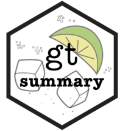

across(.cols,
.fns,
...,
.names)Unidad 5: Estadísticos, operaciones múltiples y resúmenes
Introducción
Con las herramientas conocidas hasta el momento sabemos obtener resúmenes estadísticos de variables cuantitativas usando a summarise() y estratificados a partir de group_by() o el argumento by = de summarise().
Dentro de este andamiaje que produce summarise() se aplican las funciones estadísticas conocidas de lenguaje como:
min()mínimomax()máximomean()mediamedian()medianavar()varianzasd()desvíosum()sumatoriafirst()primer valor en el vectorlast()último valor en el vectorn()número de valores en el vectorn_distinct()números de valores distintos en el vector
Y tantas otras provenientes de paquetes específicos como construidas (propias).
Estas tareas, ya sea transformando u obteniendo resultados resumenes de variables, las aplicamos variable a variable, es decir repitiendo las operaciones para cada una de las columnas de una tabla.
Una premisa del tidyverse, y también de la programación en general, es no copiar y pegar el código mas de dos veces. Si bien esta práctica ahorra tiempo y no esta mal en si mismo, hacerlo suele ser una fuente de errores y además incrementa las líneas de código del script.
Operaciones múltiples
El paquete dplyr de tidyverse implementa desde hace poco tiempo un esquema de trabajo para operaciones múltiples o simultáneas a través de su función across().
Esta función se puede utilizar en estructuras de mutate() o summarise() dependiendo del resultado buscado y tiene dos partes fundamentales: la captura o selección de variables donde vamos a aplicar determinadas funciones y la declaración de las funciones a aplicar.
across()
La función se incorporó a partir de la versión de dplyr 1.0.0 y su sintaxis general es:
donde los argumentos son:
.cols = columnas a transformar
.fns = función o funciones para aplicar a cada columna de .cols
... = argumentos adicionales de las funciones especificadas anteriormente (ejemplo: na.rm = T)
.names = nombres de las columnas de salida. Aquí, {.col} es un marcador especial al que se le puede agregar el sufijo deseado.
Aplicación en resúmenes
Veamos un ejemplo de uso para situaciones donde queremos obtener resumenes simultáneos.
Tomemos la siguiente tabla de datos ficticios:
datos# A tibble: 10 × 4
a b c d
<dbl> <dbl> <dbl> <dbl>
1 -0.560 1.22 -1.07 0.426
2 -0.230 0.360 -0.218 -0.295
3 1.56 0.401 -1.03 0.895
4 0.0705 0.111 -0.729 0.878
5 0.129 -0.556 -0.625 0.822
6 1.72 1.79 -1.69 0.689
7 0.461 0.498 0.838 0.554
8 -1.27 -1.97 0.153 -0.0619
9 -0.687 0.701 -1.14 -0.306
10 -0.446 -0.473 1.25 -0.380 Supongamos que queremos calcular la media de cada variable numérica, con lo que sabemos hasta ahora podríamos hacerlo repitiendo para cada variable.
datos |> summarise(
a = mean(a),
b = mean(b),
c = mean(c),
d = mean(d),
)# A tibble: 1 × 4
a b c d
<dbl> <dbl> <dbl> <dbl>
1 0.0746 0.209 -0.425 0.322Pero esto rompe la regla general que buscamos de nunca copiar y pegar más de dos veces, ocasionando que me pueda equivocar al editar el nombre de la variable que va en cada mean() y generando tantas líneas de código como cantidad de variables tengo.
Para solucionarlo vamos a aplicar across() realizando el resumen simultáneo en una sola línea.
datos |> summarise(
across(.cols = a:d,
.fns = mean),
)# A tibble: 1 × 4
a b c d
<dbl> <dbl> <dbl> <dbl>
1 0.0746 0.209 -0.425 0.322Observemos que el primer argumento es el rango de nombres de variables que estamos seleccionando donde aplicar la función que aperece como segundo argumento.
Es decir, que el primer argumento de la función responde de la misma forma que la función select() y por ende, aplican también las funciones ayudantes de selección.
everything(): coincide con todas las variables.group_cols(): seleccione todas las columnas de agrupación.starts_with(): comienza con un prefijo.ends_with(): termina con un sufijo.contains(): contiene una cadena literal.matches(): coincide con una expresión regular.
num_range(): coincide con un rango numérico como x01, x02, x03.all_of(): coincide con nombres de variables en un vector de caracteres. Todos los nombres deben estar presentes; de lo contrario, se generará un error de fuera de límites.any_of(): igual queall_of(), excepto que no se genera ningún error para los nombres que no existen.where(): aplica una función a todas las variables y selecciona aquellas para las cuales la función regresa TRUE.
Mostremos otra tabla de ejemplo similar a la anterior:
datos# A tibble: 10 × 5
grupo a b c d
<chr> <dbl> <dbl> <dbl> <dbl>
1 B -1.12 1.52 0.304 1.03
2 B -0.403 -1.55 0.448 -0.285
3 A -0.467 0.585 0.0530 -1.22
4 B 0.780 0.124 0.922 0.181
5 B -0.0834 0.216 2.05 -0.139
6 B 0.253 0.380 -0.491 0.00576
7 A -0.0285 -0.502 -2.31 0.385
8 A -0.0429 -0.333 1.01 -0.371
9 B 1.37 -1.02 -0.709 0.644
10 A -0.226 -1.07 -0.688 -0.220 Aquí datos agrega una variable categórica llamada grupo con dos valores (A y B).
Usando group_by() combinada con una selección completa (ayudante everything) del resto de las variables obtenemos las medias por cada uno de estos grupos.
datos |>
group_by(grupo) |>
summarise(across(everything(), mean))# A tibble: 2 × 5
grupo a b c d
<chr> <dbl> <dbl> <dbl> <dbl>
1 A -0.191 -0.331 -0.485 -0.357
2 B 0.132 -0.0552 0.421 0.239El argumento .cols también puede recibir construcciones booleanas utilizando los operadores conocidos como ! (negación) y conectores lógicos como & (AND) y | (OR) entre las funciones ayudantes de selección.
.cols = !where(is.numeric) & starts_with("a")En este ejemplo, se seleccionan todas las columnas no numéricas, cuyo nombre comienza con “a”.
Hasta ahora vimos el ejemplo de aplicar una función simple como mean() a un grupo de variables.
Que sucede si entre los datos de esas variables hay valores NA?
datos_na# A tibble: 5 × 4
a b c d
<dbl> <dbl> <dbl> <dbl>
1 1.56 -1.27 NA -0.473
2 -0.560 NA -1.05 -1.07
3 -0.230 1.22 0.238 -0.218
4 NA -0.446 1.29 -1.03
5 0.0705 -0.687 NA -0.729Vamos a necesitar incorporar el argumento na.rm = TRUE a la función mean() porque si no el resultado será:
datos_na |> summarise(
across(.cols = a:d,
.fns = mean),
)# A tibble: 1 × 4
a b c d
<dbl> <dbl> <dbl> <dbl>
1 NA NA NA -0.703Como lo hacemos dentro de un across()?
Existen dos formas sintácticas de realizarlo.
Una función estilo-purrr (tidyverse) que tiene la forma
~ mean(.x, na.rm = TRUE)Una función anónima de R base mediante
function(x) mean(x, na.rm = TRUE)o más sencilla en su forma de atajo:\(x) mean(x, na.rm = TRUE)
# forma tidyverse (purrr)
datos_na |>
summarise(
across(a:d, ~ mean(.x, na.rm = TRUE))
)# A tibble: 1 × 4
a b c d
<dbl> <dbl> <dbl> <dbl>
1 0.210 -0.293 0.161 -0.703# forma R base (atajo función anómina)
datos_na |>
summarise(
across(a:d, \(x) mean(x, na.rm = TRUE))
)# A tibble: 1 × 4
a b c d
<dbl> <dbl> <dbl> <dbl>
1 0.210 -0.293 0.161 -0.703Se le llama función anónima justamente porque no hace falta ponerle nombre. Acostumbrarse a esta notación es más útil que la forma del tidyverse porque aplica también para otras funciones.
Para incorporar más de una función dentro de across() debemos incluirlas dentro de una lista [list()]
datos_na |>
summarise(
across(a:d, list(
media = \(x) mean(x, na.rm = TRUE),
desvio = \(x) sd(x, na.rm = TRUE),
n_na = \(x) sum(is.na(x))))
)# A tibble: 1 × 12
a_media a_desvio a_n_na b_media b_desvio b_n_na c_media c_desvio c_n_na
<dbl> <dbl> <int> <dbl> <dbl> <int> <dbl> <dbl> <int>
1 0.210 0.936 1 -0.293 1.07 1 0.161 1.17 2
# ℹ 3 more variables: d_media <dbl>, d_desvio <dbl>, d_n_na <int>La lista contiene cada función a aplicar, bajo nombres definidos a la izquierda del igual. El resultado muestra 12 variables producto de hacer tres operaciones en cada una de las 4 variables de la tabla.
Observemos que los nombres de las variables resultado se componen del nombre de la columna, un guión bajo y el nombre definido de la función aplicada (variable_funcion)
La estructura de estos nombres se pueden modificar con el argumento .names.
El marcador especial para el nombre de columna es {.col} y para el nombre de la función definida es {.fn}.
Por ejemplo, podríamos invertir el orden predeterminado de los nombres del resumen (funcion_variable)
datos_na |>
summarise(
across(a:d, list(
media = \(x) mean(x, na.rm = TRUE),
n_na = \(x) sum(is.na(x))),
.names = "{.fn}_{.col}")
)# A tibble: 1 × 8
media_a n_na_a media_b n_na_b media_c n_na_c media_d n_na_d
<dbl> <int> <dbl> <int> <dbl> <int> <dbl> <int>
1 0.210 1 -0.293 1 0.161 2 -0.703 0Aplicación en conversión o creación de nuevas variables
Hasta el momento trabajamos con la función across() dentro de un resumen (summarise) pero al comienzo también dijimos que se puede utilizar para transformaciones masivas de datos.
La plataforma para lograr esto es mutate() y lo podemos usar modificando las variables originales o bien creando nuevas variables si cambiamos su nombre con .names.
Para ejemplificar, aplicaremos la función coalesce() perteneciente a dplyr, para convertir los valores NA en ceros, transformando las variables originales anteriores.
datos_na |>
mutate(
across(a:d, \(x) coalesce(x, 0))
)# A tibble: 5 × 4
a b c d
<dbl> <dbl> <dbl> <dbl>
1 1.56 -1.27 0 -0.473
2 -0.560 0 -1.05 -1.07
3 -0.230 1.22 0.238 -0.218
4 0 -0.446 1.29 -1.03
5 0.0705 -0.687 0 -0.729Si no agregamos ningún otro argumento el reemplazo de los valores NA por 0 se realiza en cada variable sobrescribiendo las observaciones.
En cambio, si queremos que coexistan las variables originales con las nuevas incluyendo estos cambios podemos declarar en el argumento .names la estructura de los nombres nuevos.
datos_na |>
mutate(
across(a:d, \(x) coalesce(x, 0),
.names = "{.col}_na_cero")
)# A tibble: 5 × 8
a b c d a_na_cero b_na_cero c_na_cero d_na_cero
<dbl> <dbl> <dbl> <dbl> <dbl> <dbl> <dbl> <dbl>
1 1.56 -1.27 NA -0.473 1.56 -1.27 0 -0.473
2 -0.560 NA -1.05 -1.07 -0.560 0 -1.05 -1.07
3 -0.230 1.22 0.238 -0.218 -0.230 1.22 0.238 -0.218
4 NA -0.446 1.29 -1.03 0 -0.446 1.29 -1.03
5 0.0705 -0.687 NA -0.729 0.0705 -0.687 0 -0.729Otras conversiones posibles pueden utilizar funciones de reemplazo para variables cuantitativas como por ejemplo exp(), log(), scale(), etc. O bien convertir a factor variables character y hasta aplicar funciones condicionales como if_else() o case_when().
Filtros con iteraciones
El paquete dplyr trae consigo algunas funciones iterativas emparentadas con across() para usar dentro de estructuras de filtro -filter()-, es el caso de if_any() e if_all().
if_any() enmascara una repetición de OR lógicos if_all() una secuencia de AND lógicos.
Usémoslas con los datos con los que venimos trabajando.
datos_na |>
filter(if_any(a:d, is.na))# A tibble: 4 × 4
a b c d
<dbl> <dbl> <dbl> <dbl>
1 1.56 -1.27 NA -0.473
2 -0.560 NA -1.05 -1.07
3 NA -0.446 1.29 -1.03
4 0.0705 -0.687 NA -0.729Devuelve las observaciones donde en alguna de las variables encuentra algún NA.
Es lo mismo que filter(is.na(a) | is.na(b) | is.na(c) | is.na(d))
datos_na |>
filter(if_all(a:d, is.na))# A tibble: 0 × 4
# ℹ 4 variables: a <dbl>, b <dbl>, c <dbl>, d <dbl>Devuelve las observaciones donde en todas las variables encuentra valores NA. En este caso no hay ninguna que cumpla esa condición, por eso el resultado es un dataframe vacío.
Es lo mismo que filter(is.na(a) & is.na(b) & is.na(c) & is.na(d))
Una forma rápida de armar filtros por múltiples variables escribiendo poco código.
Las dos funciones de filtro trabajan con el mismo esquema que across(), por lo tanto se le puede aplicar una función o expresión de condición (todas deben devolver TRUE o FALSE)
datos |>
filter(if_all(a:d, \(x) x > -0.5 & x < 1))# A tibble: 2 × 5
grupo a b c d
<chr> <dbl> <dbl> <dbl> <dbl>
1 B 0.780 0.124 0.922 0.181
2 B 0.253 0.380 -0.491 0.00576Acá el valor de cada en todas las observaciones filtradas debe estar en el rango -0,5 a 1. Hay una que cumple la condición en las 4 variables numéricas.
Operaciones por fila
La filosofía del tidy-data, es particularmente adecuada para realizar operaciones por columnas (variables). Todas las funciones de resúmenes toman los valores de forma vertical para realizar una operación, como si tuviesemos vectores “parados” dentro de un dataframe.
Hay algunas circunstancias que nos lleva a necesitar realizar operaciones por filas y por supuesto esto es mucho más difícil.
El paquete dplyr incorporó en sus últimas versiones la función rowwise() que implementa un agrupamiento por cada fila, haciendo que sea más sencillo hacer estas tareas.
El uso más común es hacer calculos agregados por filas (por ejemplo, calcular la media de x, y, z).
La apariencia de los resultados de la función son similares a group_by() donde solo vemos cambios en los metadatos del dataframe que luego van a ser aprovechados por las funciones siguientes.
Tenemos un pequeño dataframe de prueba:
# A tibble: 2 × 3
x y z
<int> <int> <int>
1 1 3 5
2 2 4 6Y aplicamos la función rowwise()
df |>
rowwise()# A tibble: 2 × 3
# Rowwise:
x y z
<int> <int> <int>
1 1 3 5
2 2 4 6Lo único que vemos es la aparición de un metadatos que dice “rowwise”. Significa que las filas de la tabla está agrupadas a lo ancho y las funciones que vengan despues van a respetar este agrupamiento.
Para ver los cambios que produce este agrupamiento veamos un ejemplo comparativo.
df |>
mutate(m = mean(c(x, y, z)))# A tibble: 2 × 4
x y z m
<int> <int> <int> <dbl>
1 1 3 5 3.5
2 2 4 6 3.5df |>
rowwise() |>
mutate(m = mean(c(x, y, z)))# A tibble: 2 × 4
# Rowwise:
x y z m
<int> <int> <int> <dbl>
1 1 3 5 3
2 2 4 6 4Si usamos mutate() con un dataframe normal, calcula la media de x, y, z tomando los valores de todas las filas. Si lo aplicamos a una tabla con rowwise, calcula la media de cada fila, tomando los valores de cada una de las tres variables.
Opcionalmente, se puede indicar variables como “identificador”.
Estas variables se conservan cuando se llama a un summarise() por ejemplo, por lo que se comportan de manera similar a las variables de agrupación pasadas a group_by().
Cambiamos el dataframe que ahora es:
# A tibble: 2 × 4
nombre x y z
<chr> <int> <int> <int>
1 Mercurio 1 3 5
2 Venus 2 4 6df |>
rowwise() |>
summarise(m = mean(c(x, y, z)))# A tibble: 2 × 1
m
<dbl>
1 3
2 4df |>
rowwise(nombre) |>
summarise(m = mean(c(x, y, z)))# A tibble: 2 × 2
# Groups: nombre [2]
nombre m
<chr> <dbl>
1 Mercurio 3
2 Venus 4rowwise() es solo una forma especial de agrupación por fila, por lo que si deseamos eliminarla de una tabla, simplemente llamamos a ungroup().
c_across()
La versión de across() para operaciones simultáneas por filas se llama c_across() y tiene los mismos fundamentos aplicados a estas situaciones, aunque es mucho más sencilla dado que no tiene argumentos extras.
Aplicada sobre el último dataframe:
df |>
rowwise(nombre) |>
summarise(m = mean(c_across(x:z)))# A tibble: 2 × 2
# Groups: nombre [2]
nombre m
<chr> <dbl>
1 Mercurio 3
2 Venus 4O bien, seleccionando los tipos de datos numéricos:
df |>
rowwise(nombre) |>
summarise(m = mean(c_across(where(is.numeric))))# A tibble: 2 × 2
# Groups: nombre [2]
nombre m
<chr> <dbl>
1 Mercurio 3
2 Venus 4Sin duda este abordaje tiene mayor utilidad cuando las operaciones por fila contemplan muchas variables.
Estadísticos compatibles con tidyverse
El interprete de R trae muchas funciones estadísticas descriptivas y para inferencia disponibles en su versión base pero ninguna de estas son compatibles con la filosofia de trabajo de tidyverse. Es por eso que para utilizar funciones como mean() o median() por ejemplo, debemos introducirlas dentro de estructuras como summarise(). Las funciones de este tipo trabajan sobre vectores y no tienen en cuenta a los dataframes que encapsulan a los vectores como variables.
Tenemos estos datos y vamos a calcular su media.
datos# A tibble: 10 × 1
Edad
<dbl>
1 34
2 56
3 43
4 21
5 67
6 89
7 54
8 32
9 16
10 76Si lo abordamos con la sintaxis R base:
# Edad es una variable de datos pero llamada así es un vector numérico
datos$Edad [1] 34 56 43 21 67 89 54 32 16 76# preguntamos si es vector
is.vector(datos$Edad)[1] TRUE# ejecutamos mean() sobre ese vector
mean(datos$Edad)[1] 48.8Si lo abordamos con tuberías.
library(tidyverse)datos |>
mean(Edad)Warning in mean.default(datos, Edad): argument is not numeric or logical:
returning NA[1] NANecesitamos la función summarise() para que funcione bien.
datos |>
summarise(media_edad = mean(Edad))# A tibble: 1 × 1
media_edad
<dbl>
1 48.8Cuando los estadísticos son más complejos que estas funciones descriptivas y devuelven un conjunto de resultados en forma de lista ni siquiera alcanza con aplicarlas dentro de un andamiaje de tidyverse como summarise().
Un ejemplo de ello, son todas las funciones de R base para comparaciones de inferencia. Tomemos el caso de la prueba t de Student, que sirve para comparar las medias de muestras aproximadamente normales.
La función de R base es t.test() y sus argumentos obligatorios son x e y o bien utilizar un formato fórmula (var1 ~ var2)
Para comparar dos conjuntos de datos con la forma x e y los datos tienen que estar en dos variables separadas y por lo tanto no cumplir con el formato “ordenado”.
datos# A tibble: 10 × 2
Edad1 Edad2
<dbl> <dbl>
1 34 45
2 56 76
3 43 32
4 21 12
5 67 14
6 89 18
7 54 20
8 32 54
9 16 98
10 76 32Aplicamos la función teniendo en cuenta que lo que ingresa en cada argumento es un vector (dataframe$variable)
t.test(x = datos$Edad1, y = datos$Edad2)
Welch Two Sample t-test
data: datos$Edad1 and datos$Edad2
t = 0.73815, df = 17.458, p-value = 0.4702
alternative hypothesis: true difference in means is not equal to 0
95 percent confidence interval:
-16.11732 33.51732
sample estimates:
mean of x mean of y
48.8 40.1 El resultado da un valor de probabilidad de 0,47 lo que indica que no hay diferencias significativas entre las medias de las dos muestras.
Para usar el formato fórmula es necesario que la tabla de datos cumpla con el formato “ordenado”, quedando:
datos# A tibble: 20 × 2
Muestra Edad
<dbl> <dbl>
1 1 34
2 1 56
3 1 43
4 1 21
5 1 67
6 1 89
7 1 54
8 1 32
9 1 16
10 1 76
11 2 45
12 2 76
13 2 32
14 2 12
15 2 14
16 2 18
17 2 20
18 2 54
19 2 98
20 2 32En este caso el t.test() lleva formula y datos en el argumento data.
t.test(formula = Edad ~ Muestra, data = datos)
Welch Two Sample t-test
data: Edad by Muestra
t = 0.73815, df = 17.458, p-value = 0.4702
alternative hypothesis: true difference in means between group 1 and group 2 is not equal to 0
95 percent confidence interval:
-16.11732 33.51732
sample estimates:
mean in group 1 mean in group 2
48.8 40.1 Lo importante acá no es el resultado sino la forma en que lo devuelve. Observaran que no se trata de un formato ordenado ni se parece a una tabla. El tidyverse siempre (salvo raras excepciones, como con pull()) devuelve una tabla de datos ordenada y por eso todas estas funciones son incompatibles, aún utilizando un summarise() y nos dan error:
datos |>
summarise(IC = t.test(Edad ~ Muestra))Error in `summarise()`:
ℹ In argument: `IC = t.test(Edad ~ Muestra)`.
Caused by error:
! `IC` must be a vector, not a <htest> object.Hace unos años a un desarrollador se le ocurrió crear un paquete que contiene todas estas funciones (y algunas más) del R base en espejo pero compatibles con tidyverse, esto es: reciben un dataframe y devuelven un dataframe.
El paquete se llama rstatix y provee un marco simple e intuitivo compatible con el uso de tuberías, coherente con la filosofía de diseño “tidyverse”, para realizar pruebas estadísticas descriptivas básicas y otras más avanzadas de inferencia y modelado.
Las funciones de inferencia estadística, para comparar medias y proporciones (métodos paramétricos y no paramétricos), ANOVAS, analisis post-hoc, correlaciones y tamaños de efecto, así como también valores p ajustados o agregados de etiquetas de significación no serán explicados en este curso pero aquellxs que les interese profundizar y utilizarlas le pueden sacar un provecho muy útil a este paquete, cuyo sitio es https://rpkgs.datanovia.com/rstatix/index.html.
Respecto del ejemplo anterior la función de rstatix que reemplaza al t.test() tradicional es t_test(), es decir que al modo tidyverse reemplaza en el nombre el punto por un guión bajo (sucede en todas las funciones del paquete).
library(rstatix)
datos |>
t_test(Edad ~ Muestra, conf.level = .95)# A tibble: 1 × 8
.y. group1 group2 n1 n2 statistic df p
* <chr> <chr> <chr> <int> <int> <dbl> <dbl> <dbl>
1 Edad 1 2 10 10 0.738 17.5 0.47Ahora si, el resultado es una tabla de 8 variables por una fila, lo que nos va a permitir poder continuar el trabajo con tuberías. Debajo seleccionamos solo la variable que queremos ver (valor de p).
datos |>
t_test(Edad ~ Muestra, conf.level = .95) |>
select(p)# A tibble: 1 × 1
p
<dbl>
1 0.47Dentro de los estadísticos descriptivos la función get_summary_stats() devuelve un resumen univariado para variables cuantitativas.
datos |>
get_summary_stats(Edad)# A tibble: 1 × 13
variable n min max median q1 q3 iqr mad mean sd se
<fct> <dbl> <dbl> <dbl> <dbl> <dbl> <dbl> <dbl> <dbl> <dbl> <dbl> <dbl>
1 Edad 20 12 98 38.5 20.8 58.8 38 26.7 44.4 26.0 5.82
# ℹ 1 more variable: ci <dbl>Y al ser compatible con tidyverse se puede estratificar con group_by().
datos |>
group_by(Muestra) |>
get_summary_stats(Edad)# A tibble: 2 × 14
Muestra variable n min max median q1 q3 iqr mad mean sd
<dbl> <fct> <dbl> <dbl> <dbl> <dbl> <dbl> <dbl> <dbl> <dbl> <dbl> <dbl>
1 1 Edad 10 16 89 48.5 32.5 64.2 31.8 25.9 48.8 23.9
2 2 Edad 10 12 98 32 18.5 51.8 33.2 23.7 40.1 28.6
# ℹ 2 more variables: se <dbl>, ci <dbl>La función freq_table() construye tablas con las variables categóricas.
datos |>
freq_table(Sexo)# A tibble: 2 × 3
Sexo n prop
<chr> <int> <dbl>
1 Mujer 14 70
2 Varon 6 30También agregando otra variables que estratifiquen la salida.
datos |>
freq_table(Sexo, Fuma)# A tibble: 4 × 4
Sexo Fuma n prop
<chr> <chr> <int> <dbl>
1 Mujer No 10 71.4
2 Mujer Si 4 28.6
3 Varon No 2 33.3
4 Varon Si 4 66.7Una opción más completa para construir tablas y tablas de contingencia es usar la familia de funciones tabyl() del paquete janitor.
library(janitor)
datos |>
tabyl(Sexo) Sexo n percent
Mujer 14 0.7
Varon 6 0.3Calcula las frecuencias absolutas y relativas de variables categóricas de forma similar a freq_table() pero se le pueden modificar sus argumentos y asociar otras funciones del paquete mediante tuberías para obtener mejores resultados (también es compatible con tidyverse).
datos |>
tabyl(Sexo) |>
adorn_totals(where = "row") %>% # agregamos totales
adorn_pct_formatting(digits = 2) # porcentaje con dos decimales Sexo n percent
Mujer 14 70.00%
Varon 6 30.00%
Total 20 100.00%La forma más adecuada de describir la relación entre dos variables categóricas es a partir de la construcción de una tabla de contingencia. Para ello se introduce en cada fila de la tabla las categorías de una de las variables y las categorías de la otra variable se asocian a cada una de las columnas de la tabla, en cada celda de la tabla aparecerá el número de observaciones correspondientes a la combinación oportuna de ambas variables. Si bien freq_table() hace lo mismo, respeta la salida ordenada lo que dificulta su lectura.
Con la misma función tabyl() se puede realizar una tabla de contingencia, incluyendo a la variable Fuma.
datos |>
tabyl(Sexo, Fuma) Sexo No Si
Mujer 10 4
Varon 2 4Recordemos que el orden dentro de los paréntesis de la función es igual al de los índices del lenguage, el primer argumento es la variable que aparecerá en las filas y el segundo la variable de las columnas. Por ese motivo, en la tabla de contingencia absoluta tenemos el Sexo en las filas y a Fuma en las columnas.
Su salida se puede mejorar con totales por columna y que aparezca el nombre de la variable que esta en la columna:
datos |>
tabyl(Sexo, Fuma) |>
adorn_title(placement = "combined") |>
adorn_totals(where = "row") Sexo/Fuma No Si
Mujer 10 4
Varon 2 4
Total 12 8También haciendo que los valores sean porcentuales por fila.
datos |>
tabyl(Sexo, Fuma) |>
adorn_title(placement = "combined") |>
adorn_totals(where = "row") |>
adorn_percentages(denominator = "row") |> # % por fila
adorn_pct_formatting(digits = 2) # redondea con 2 decimales Sexo/Fuma No Si
Mujer 71.43% 28.57%
Varon 33.33% 66.67%
Total 60.00% 40.00%Incoporamos valores absolutos entre paréntesis.
datos |>
tabyl(Sexo, Fuma) |>
adorn_totals(where = "row") |>
adorn_percentages(denominator = "row") |>
adorn_pct_formatting(digits = 2) |>
adorn_ns() |>
adorn_title() Fuma
Sexo No Si
Mujer 71.43% (10) 28.57% (4)
Varon 33.33% (2) 66.67% (4)
Total 60.00% (12) 40.00% (8)El paquete trae muchas funciones que se integran para construir tablas complejas. Más de estas opciones las pueden encontrar en el sitio oficial del paquete janitor
Tablas para presentaciones
Cuando necesitemos presentar resultados estadísticos combinados, producto de variables cuanti y cualitativas a la vez, podemos hechar mano a funciones del paquete gtsummary.

Esta librería proporciona una forma elegante y flexible de crear tablas analíticas y de resumen, univariadas, estratificadas y complejas.
Integra estimaciones estadísticas predefinidas y se pueden personalizar a gusto, interactuando con otros paquetes como gt, labelled y flextable.
En el sitio del desarrollador (gtsummary), encontrarán mucha documentación para adecuar los requerimientos de la salida buscada.
Mostramos un ejemplo en función de unos datos de prueba.
library(readxl)
library(gtsummary)
datos <- read_excel("datos/base2023r.xlsx")
datos |>
select(EDAD_DIAGNOSTICO, SEXO, MOTIVO_CONSULTA) |>
tbl_summary()| Characteristic | N = 2001 |
|---|---|
| EDAD_DIAGNOSTICO | 33 (23, 49) |
| SEXO | |
| A | 1 (0.5%) |
| F | 68 (34%) |
| M | 131 (66%) |
| MOTIVO_CONSULTA | |
| Contacto | 2 (11%) |
| Examen de Salud | 1 (5.3%) |
| Sintomático Respiratorio | 16 (84%) |
| Unknown | 181 |
| 1 Median (Q1, Q3); n (%) | |
Quizás lo mejor sea presentar los datos estratificados por sexo, por ejmplo. Además configuramos algunos argumentos mas.
datos |>
select(EDAD_DIAGNOSTICO, SEXO, MOTIVO_CONSULTA) |>
filter(SEXO != "A") |>
tbl_summary(by = SEXO,
statistic = list(
all_continuous() ~ "{mean} ({sd})",
all_categorical() ~ "{n} / {N} ({p}%)"),
digits = all_continuous() ~ 1,
missing_text = "Sin dato") |>
modify_header(label ~ "**Variable**")| Variable | F N = 681 |
M N = 1311 |
|---|---|---|
| EDAD_DIAGNOSTICO | 33.2 (19.1) | 39.1 (18.2) |
| MOTIVO_CONSULTA | ||
| Contacto | 2 / 7 (29%) | 0 / 12 (0%) |
| Examen de Salud | 1 / 7 (14%) | 0 / 12 (0%) |
| Sintomático Respiratorio | 4 / 7 (57%) | 12 / 12 (100%) |
| Sin dato | 61 | 119 |
| 1 Mean (SD); n / N (%) | ||
El argumento statistic permite que, mediante una lista, configuremos los estadísticos a presentar. Para todas las variables continuas seleccionamos la media (mean) y el desvío estandar (sd); para todas las variables categóricas el conteo de cada categoría y el porcentaje. Los decimales de las variables continuas quedan definidos en 1 y cuando aparezcan valores NA serán expresados con la etiqueta “Sin dato”. Por último, la cabecera de la tabla en la comuna de las variables será “Variable” en negrita.
Flextable

Estas tablas de presentación de resultados se pueden conectar con el paquete flextable para exportarlas en diferentes formatos, como Word, html, PDF, PowerPoint o imagen y además se vincula con el contenido en estructuras de archivos rmarkdown y/o Quarto.
Una salida interesante es poder guardar la tabla en formato Word (.docx), porque luego podemos editarla facilmente, para esto la función as_flex_table() convierte al tbl_summary() de gtsummry en clase flextable.
library(flextable)
tabla1 <- datos |>
select(EDAD_DIAGNOSTICO, SEXO, MOTIVO_CONSULTA) |>
filter(SEXO != "A") |>
tbl_summary(by = SEXO,
statistic = list(
all_continuous() ~ "{mean} ({sd})",
all_categorical() ~ "{n} / {N} ({p}%)"),
digits = all_continuous() ~ 1,
missing_text = "Sin dato") |>
modify_header(label ~ "**Variable**") |>
as_flex_table() |>
autofit() |> # ajuste automático
theme_box() # tema box
tabla1Variable | F | M |
|---|---|---|
EDAD_DIAGNOSTICO | 33.2 (19.1) | 39.1 (18.2) |
MOTIVO_CONSULTA | ||
Contacto | 2 / 7 (29%) | 0 / 12 (0%) |
Examen de Salud | 1 / 7 (14%) | 0 / 12 (0%) |
Sintomático Respiratorio | 4 / 7 (57%) | 12 / 12 (100%) |
Sin dato | 61 | 119 |
1Mean (SD); n / N (%) | ||
Luego es posible exportar fácilmente una o más tablas a partir de los objetos flextables almacenados a documentos tipo html, RTF, Word, PowerPoint o PNG.
Un ejemplo para salidas tipo Word es: save_as_docx()
save_as_docx(
"tabla 1" = tabla1,
path = "/resultados/tabla_exportada.docx")Exporta el objeto tabla1 en el archivo tabla_exportada.docx dentro de la carpeta resultados.
Todos los objetos de clase flextable están compuestos por tres partes:
- header: de forma predeterminada, solo hay una fila de encabezado que contiene los nombres del dataframe.
- body: la parte del cuerpo contiene datos del dataframe.
- footer: la parte del pie de tabla no está implementada de forma predeterminada, pero puede contener notas al pie o cualquier contenido.

Vamos a retomar, con mayor profundidad, estos paquetes cuando trabajemos con archivos Quarto donde integremos productos elaborados mediante código (resultados, tablas y gráficos) con elementos de documentación (textos y otros cosas de markdown).